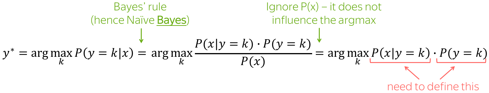
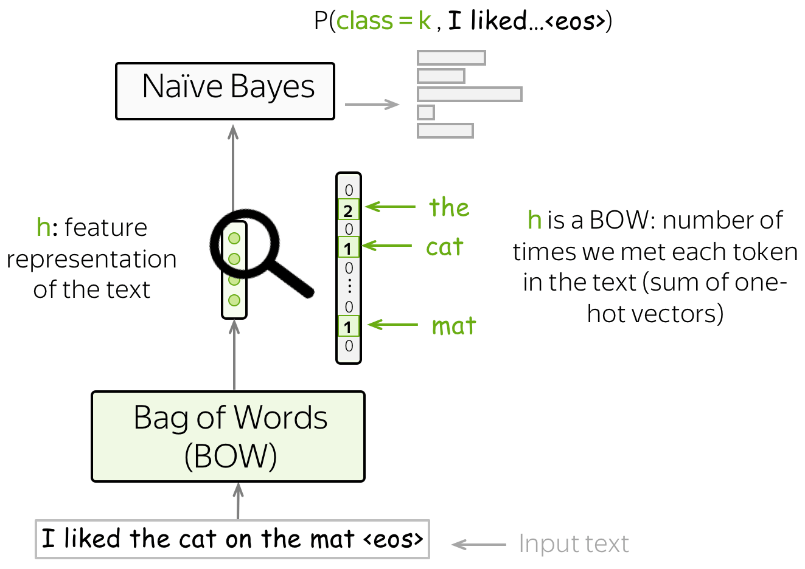
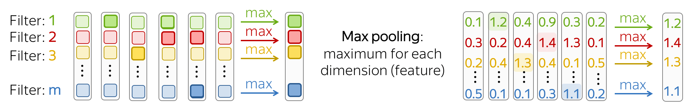
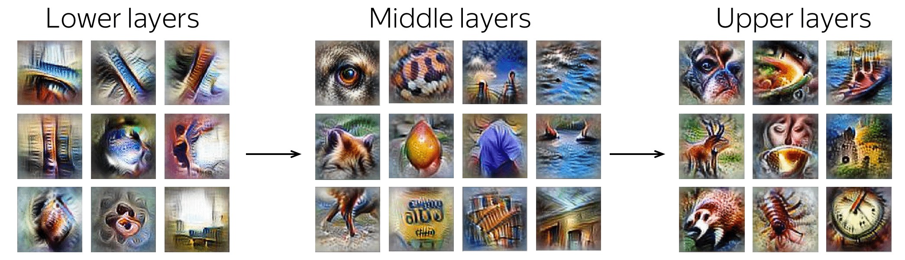

文本分类 (英文原文)
多分类任务：
多个类别标签，但只有一个正确
二分类任务：
2个类别标签，但只有一个正确
多标签分类任务:
多个类别标签，可能有多个标签是正确的
多分类任务：
多个类别标签，但只有一个正确
文本分类是一个非常流行的任务。我们每天都会遇到它的应用，即邮件代理中的文本分类器：它对邮件进行分类并过滤垃圾邮件。其他常见应用还包括：文档分类、审查分类等。
文本分类器常常不是作为一个单独的任务使用，而是作为更大的工作流管道的一部分。例如，一个语音助手对你的话语进行分类，以了解你想要什么（例如，设置闹钟、订购出租车或只是聊天），并根据分类器的决定将你的信息传递给不同的模型。另一个例子是网络搜索引擎：它可以使用分类器来识别查询语言，预测你的查询类型（例如，信息性、导航性、交易性），了解你除了要看文件之外，是否还要看图片或视频，等等。
由于大多数分类数据集都假定只有一个正确类别，所以，下面这章中我们重点介绍这种分类，即单标签分类。我们会在另一个章节中详细阐述 (多标签分类).
分类数据集 (英文原文)
文本分类的数据集在大小（包括数据集大小和例子大小）、分类内容和标签数量方面都有很大不同。请看下面的统计数据。
| 数据集 | 类型 | 标签数量 | 大小 (train/test) | 平均长度 (tokens) |
|---|---|---|---|---|
| SST | 情感分类 | 5 or 2 | 8.5k / 1.1k | 19 |
| IMDb Review | 情感分类 | 2 | 25k / 25k | 271 |
| Yelp Review | 情感分类 | 5 or 2 | 650k / 50k | 179 |
| Amazon Review | 情感分类 | 5 or 2 | 3m / 650k | 79 |
| TREC | 问题分类 | 6 | 5.5k / 0.5k | 10 |
| Yahoo! Answers | 问题分类 | 10 | 1.4m / 60k | 131 |
| AG’s News | 主题分类 | 4 | 120k / 7.6k | 44 |
| Sogou News | 主题分类 | 6 | 54k / 6k | 737 |
| DBPedia | 主题分类 | 14 | 560k / 70k | 67 |
最流行的数据集是情感分类数据集。它们涉及对电影、地方或餐馆以及产品的评论。也有用于问题类型分类和主题分类的数据集。
为了更好地理解典型的分类任务，下面你可以看一下不同数据集的例子。
How to: 选择一个数据集并查看示例以了解任务。 或者你可以稍后再回来！
数据集描述(点我！)
SST 是一个情感分类数据集，由电影评论（来自烂番茄 html 文件）组成。 数据集由句子的解析树组成，不仅是整个句子，而且更小的短语都有一个情感标签。
有五个标签：1（非常负面）、2（负面）、3（中性）、4（正面）和 5（非常正面）（标签有时候也可以表示为0-4）。 根据使用的标签不同，可以获得二分类的 SST-2 数据集（如果只考虑正面和负面）或细粒度的情绪分类 SST-5（使用所有标签）。
请注意，上面提到的数据集大小（train/dev/test 为 8.5k/2.2k/1.1k）是按照句子数量计算的。并且，使用了 215,154 个短语组成数据集中的每个句子。
如果想深入了解数据集，请阅读 原文。
看看句子的情感是组成的吧！
标签：3
评论：
Makes even the claustrophobic on-board quarters seem fun .
标签：1
评论：
Ultimately feels empty and unsatisfying , like swallowing a
Communion wafer without the wine .
标签：5
评论：
A quiet treasure -- a film to be savored .
数据集描述(点我！)
IMDb 是来自 Internet 电影数据库的非正式电影评论的大型数据集。 该数据集中每部电影有不超过 30 条评论。 该数据集包含偶数个正面和负面评论，因此随机猜测产生 50% 的准确率。 评论高度两极分化：它们只有负面（最高分 4 分，满分 10）或正面（最低分 7 分，满分 10）。
更多细节详见 原文。
标签: negative
评论
Hobgoblins .... Hobgoblins .... where do I begin?!?
This
film gives Manos -
The Hands of Fate and Future War a run for their money as the worst
film ever made .
This one is fun to laugh at , where as Manos was just painful to
watch . Hobgoblins will
end up in a time capsule somewhere as the perfect movie to describe
the term : " 80 's cheeze " .
The acting ( and I am using this term loosely ) is atrocious , the
Hobgoblins are some of the worst
puppets you will ever see , and the garden tool fight has to be seen
to be believed .
The movie was the perfect vehicle for MST3 K , and that version is
the only way to watch this mess .
This movie gives Mike and the bots lots of ammunition to pull some
of the funniest one -
liners they have ever done . If you try to watch this without the
help of Mike and the bots .....
God help you ! !
标签: positive
评论
One of my favorite movies I saw at preview in Seattle . Tom Hulce
was amazing , with out words could
convey his feelings / thoughts . I actually sent Mike Ferrell some
donation money to help the film
get distributed . It is good . System says I need more lines but do
not want to give away plot stuff .
I was in the audience in Seattle with Hulce and director , a writer
I think and Mike Ferrell .
They talked for about an hour afterwords . Not really a dry eye in
the house . Why Hollywood continues
to be stupid I do not know . ( actually I do know , it is our fault
, look what we watch)Well you get
what you pay for guys . Get this and see it with someone special .
It is a gem .
标签: negative
评论
Okay , if you have a couple hours to waste , or if you just really
hate your life , I would say watch
this movie . If anything it 's good for a few laughs . Not only do
you have obese , topless natives ,
but also special effects so bad they are probably outlawed in most
states . Seriuosly ,
the rating of ' PG ' is pretty humorous too , once you see the
Native Porn Extravaganza .
I would n't give this movie to my retarded nephew . You could n't
even show this to Iraqi
prisoners without violating the Geneva Convention . The plot is
sketchy , and cliché , and dumb ,
and stupid . The acting is horrible , and the ending is so painful
to watch I actually began pouring
salt into my eye just to take my mind off of the idiocy filling my
TV screen .
标签: positive
评论
I really liked this movie ... it was cute . I enjoyed it , but if
you did n't , that is your fault .
Emma Roberts played a good Nancy Drew , even though she is n't quite
like the books . The old fashion
outfits are weird when you see them in modern times , but she looks
good on them . To me , the rich
girls did n't have outfits that made them look rich . I mean , it
looks like they got all the clothes
-blindfolded- at a garage sale and just decided to put it on all
together . All of the outfits
were tacky , especially when they wore the penny loafers with their
regular outfits . I do not
want to make the movie look bad , because it definitely was n't !
Just go to the theater and
watch it ! ! ! You will enjoy it !
标签: negative
评论
I always found Betsy Drake rather creepy , and this movie reinforces
that . As another review said ,
this is a stalker movie that is n't very funny . I watched it
because it has CG in it ,
but he hardly gets any screen time . It 's no " North by Northwest "
...
标签: negative
评论
This movie was on t.v the other day , and I did n't enjoy it at all
. The first George of the
jungle was a good comedy , but the sequel .... completely awful .
The new actor and
actress to play the lead roles were n't good at all , they should of
had the original
actor ( Brendon Fraiser ) and original actress ( i forgot her name )
so this movie gets
the 0 out of ten rating , not a film that you can sit down and watch
and enjoy ,
this is a film that you turn to another channel or take it back to
the shop if hired or
bought . It was good to see Ape the ape back , but was n't as fun as
the first ,
they should of had the new George as Georges son grown up , and
still had Bredon and
( what s her face ) in the film , that would 've been a bit better
then it was .
标签: positive
评论
I loved This Movie . When I saw it on Febuary 3rd I knew I had to
buy It ! ! ! It comes out to buy
on July 24th ! ! ! It has cool deaths scenes , Hot girls , great
cast , good story , good
acting . Great Slasher Film . the Movies is about some serial killer
killing off four girls .
SEE this movies
标签: positive
评论
gone in 60 seconds is a very good action comedy film that made over
$ 100 million but got blasted
by most critics . I personally thought this was a great film . The
story was believable and
has probobly the greatest cast ever for this type of movie including
3 academy award winners
nicolas cage , robert duvall and the very hot anjolina jolie . other
than the lame stunt
at the end this is a perfect blend of action comedy and drama .
my score is * * * * ( out of * * * * )
标签: positive
评论
This is one of the most interesting movies I have ever seen . I love
the backwoods feel of this movie .
The movie is very realistic and believable . This seems to take
place in another era , maybe
the late 60 's or early 70 's . Henry Thomas works well with the
young baby . Very moving story
and worth a look .
标签: positive
评论
I admit it 's very silly , but I 've practically memorized the damn
thing ! It holds a lot of good
childhood memories for me ( my brother and I saw it opening day )
and I have respect for
any movie with FNM on the soundtrack .
标签: positive
评论
I love the series ! Many of the stereotypes portraying Southerrners
as hicks are very apparent ,
but such people do exist all too frequently . The portrayal of
Southern government rings
all too true as well , but the sympathetic characters reminds one of
the many good things
about the South as well . Some things never change , and we see the
" good old boys " every day !
There is a Lucas Buck in every Southern town who has only to make a
phone call to make things
happen , and the storybook " po ' white trash " are all too familiar
. Aside from the supernatural
elements , everything else could very well happen in the modern
South ! I somehow think Trinity ,
SC must have been in Barnwell County !
数据集描述(点我！)
Yelp 评论数据集来自 2015 年的 Yelp 数据集挑战赛 。根据标签的数量， Yelp Full（包含所有的 5 个标签）或 Yelp Polarity （仅含有正面和负面类别）。 Full在每个标签中有 130,000 个训练样本和 10,000 个测试样本， Polarity在每个类中有 280,000 个训练样本和 19,000 个测试样本。
更多细节详见 Kaggle挑战页面.
标签: 4
评论
I had a serious craving for Roti. So glad I found this place.
A very small menu selection but it had exactly what I wanted. The
serving for
$8.20 after tax is enough for 2 meals. I know where to go from now
on for a great
meal with leftovers. This is a noteworthy place to bring my Uncle
T.J. who's a Trini
when he comes to visit.
标签: 2
评论
The actual restaurant is fine, the service is friendly and
good.
I am not going to go in to the food other than to say, no.
Oh well $340 bucks and all I can muster is a no.
标签: 5
评论
What a cool little place tucked away behind a strip mall. Would
never have found
this if it was not suggested by a good friend who raved about the
cappuccino!
He is world traveler, so, it's a must try if it's the best cup he's
ever had.
He was right! Don't know if it's in the beans or the care that they
take to make
it with a fab froth decoration on top. My hubby and I loved the
caramel brulee taste..
My son loved the hot ""warm"" cocoa. Yeah, we walked in as a family
last night and
almost everyone turned our way since we did not fit the hip college
crowd.
Everyone was really friendly, though. The sweet young man behind the
counter gave my son some micro cinnamon doughnuts and scored major
points with the
little dude! We will be back.
标签: 3
评论
Jersey Mike's is okay. It's a chain place, and a bit over priced for
fast food.
I ordered a philly cheese steak. It was mostly bread, with a few
thing microscopic slices of meat. A little cheese too. And a sliver
or
two of peppers. But mostly, it was bread. I think it's funny the
people
that work here try to make small talk with you. "So, what are you
guys up to tonight?"
I think it would be fun to just try and f*#k with them, and say
something like,
"Oh you know, smoking a little meth and just chilling with some
hookers."
See what they say to that.
标签: 5
评论
Love it!!! Wish we still lived in Arizona as Chino is the one thing
we miss.
Every time I think about Chino Bandido my mouth starts watering.
If I am ever in the state again I will drive out of my way just to
go to it again. YUMMY!
标签: 4
评论
I have been here a few times, but mainly at dinner. Dinner Has
always been great, great
waiters and staff, with a LCD TV playing almost famous famous
bolywood movies.
LOL It cracks me up when they dance.....LOL...anyhow, Great
vegetarian choices for
people who eat there veggies, but trust me, I am a MEAT eater,
Chicekn Tika masala,
Little dry but still good. My favorite is there Palak Paneer. Great
for the vegetarian.
I have also tried there lunch Buffet for 11.00. I give a Thumbs up..
Good,
serve yourself, and pig out!!!!!!
标签: 3
评论
Very VERY average. Actually disappointed in the braciole. Kelsey
with the pretty smile and form
fitting shorts would probably make me think about going back and
trying something different.
标签: 1
评论
So, what kind of place serves chicken fingers and NO Ranch
dressing?????? The only sauces they
had was honey mustard and ""Canes Secret sauce"" Can I say EEWWWW!!
I thought that
the sauce tasted terrible. I am not too big a fan of honey mustard
but I do On occasion
eat it if there is nothing else And that wasn't even good! The
coleslaw was awful also.
I do have to say that the chicken fingers were very juicy but also
very bland.
Those were the only 2 items that I tried, not that there were really
any more items on
the menu, Texas toast? And Fries I think?? Overall, I would never go
back.
标签: 4
评论
Good food, good drinks, fun bar.
There are quite a few Buffalo Wild Wings in the valley and they're a
fun place to grab a quick lunch or dinner and watch the game.
They have a pretty good garden burger and their buffalo chips
(french fry-ish things) are really good.
If you like bloody mary's, they have the best one. It's so
good...really spicy and filled with celery and olives.
Be careful when you come though, if there is a game on, you'll have
to get there early or you definitely won't get a spot to sit.
标签: 5
评论
Excellent in every way. Attentive and fun owners who tend bar every
weekend night - GREAT live music,
excellent wine selection. Keeping Fountain Hills young.... one
weekend at a time.
标签: 1
评论
After repeat visits it just gets worse - the service, that is. It
was as if we were held
hostage and could not leave for a full 25 minutes because that's how
long it took to receive
hour check after several requests to several different employees.
Female servers might
be somewhat cute but know absolutely nothing about beer and this is
a brewpub.
I asked if they have an seasonal beers and the reply was no, that
they only sell
their own beers! Even more amusing is their ""industrial pale ale""
is an IPA but it
is not bitter. So, they say it's an IPA but it's not bitter, it's
not a true-to-style IPA.
Then people say ""Oh I don't like IPA's"" and want something else.
Their attempt
to rename a beer/style is actually hurting them. Amazing.
数据集描述(点我！)
亚马逊评论数据集由来自亚马逊的评论组成，其中包括产品和用户信息、评级和纯文本评论。 数据集来自 斯坦福网络分析项目 (SNAP)。 根据标签的数量，您可以获得 Amazon Full （包含所有的 5 个标签）或 Amazon Polarity（仅有正类和负类）。 Full在每个标签中有 600,000 个训练样本和 130,000 个测试样本， Polarity 在每个类中有 1800,000 个训练样本和 200,000 个测试样本。 使用的字段是评论标题和评论内容。
标签: 4
评论标题: good for a young reader
评论内容:
just got this book since i read it when i was younger and loved it.
i will reread it one
of these days, but i bet its pretty lame 15 years later, oh well.
标签: 2
评论标题: The Castle in the Attic
评论内容:
i read the castle in the attic and i thoght it wasn't very
entrtaning.
but that's just my opinion. i thought on some of the chapters it
dragged
on and lost me alot. like it would talk about one thing and then
another without
alot of detail. for my opinion, it was an ok book. it had it's
moments like whats
going to happen next then it was really boring.
标签: 1
评论标题: worst book in the
world!!!!!!!!!!!!!!!!!!!!!!!!!!!!!!!!!!!!
评论内容:
This was the worst book I have ever read in my entire life! I was
forced to read it for
school. It was complicated and very boring. I would not recommend
this book to anyone!!
Please don't waste your time and money to read this book!! Read
something else!!
标签: 3
评论标题: It's okay.
评论内容:
I'm using it for track at school as a sprinter. It's okay, but to
hold it together
is a velcro strap. So you either use the laces or take them out and
use only the velcro.
Also, if you order them, order them a half size or a full size
biggerthen your normal
size or else it'll be a tight squeeze. Plus side, you can still run
on your toes in them.
标签: 5
评论标题: Time Well Spent
评论内容:
For those beginning to read the classics this one is a great hook.
While the characters are
complex the story is linear and the allusions are simple enough to
follow. One can't help
but hope Tess's life will somehow turn out right although knowing it
will not. The burdens
she encounters seem to do little to stop her from moving forward.
Life seems so unfair
to her, but Hardy handles her masterfully; indeed it is safe to say
Hardy loves her more
than God does.
标签: 2
评论标题: Not a brilliant book but...
评论内容:
I didn't like this book very much. It was silly. I'm sorry that I've
wasted time reading
this book. There are better books to read.
标签: 3
评论标题: Simple
评论内容:
This book was not anything special. Although I love romances, it was
too simple.
The symbolism was spelled out to the readers in a blunt manner. The
less educated
readers may appreciate it. The wording was quite beautiful at times
and the plot was
enchanting (perfect for a movie) but it is not heart wrenching like
the movie Titantic
(which was a must see!) ;)
标签: 1
评论标题:
WHY???????????????????????????????????????????????????
评论内容:
WHY are poor, innocent school kids forced to read this intensly dull
text? It is
enough to put anyone off English Lit for LIFE. If anyone in
authority is reading
this, PLEASE take this piece of junk OFF the
sylabus...PLEASE!!!!!!!!!!!
标签: 4
评论标题: looking back
评论内容:
I have read several Thomas Hardy novels starting with The Mayor of
Casterbridge many years
ago in high school and I never really appreciated the style and the
fact that like other Hardy
novels Tess is a love story and a very good story. Worth reading
标签: 5
评论标题: Great Puzzle
评论内容:
This is an excellent puzzle for very young children. Melissa & Doug
products are well made and kids
love them. This puzzle is wooden so kids wont destroy it if they try
to roughly put the pieces in.
The design is adorable and makes a great gift for any young animal
lover.
数据集描述(点我！)
TREC 是一个用于对自由事实问题进行分类的数据集。 它定义了一个两层分类法，表示 TREC 任务中典型答案的自然语义分类。 层次结构包含 6 个粗分类 (ABBREVIATION, ENTITY, DESCRIPTION, HUMAN, LOCATION and NUMERIC VALUE) 和 50 个细分类。
更多细节详见 原文。
标签: DESC (description)
问题分类: How did serfdom develop in and then leave Russia
?
标签: ENTY (entity)
问题分类: What films featured the character Popeye Doyle
?
标签: HUM (human)
问题分类: What team did baseball 's St. Louis Browns become
?
标签: HUM (human)
问题分类: What is the oldest profession ?
标签: DESC (description)
问题分类: How can I find a list of celebrities ' real names
?
标签: ENTY (entity)
问题分类: What fowl grabs the spotlight after the Chinese
Year of the Monkey ?
标签: ABBR (abbreviation)
问题分类: What is the full form of .com ?
标签: ENTY (entity)
问题分类: What 's the second - most - used vowel in English ?
标签: DESC (description)
问题分类: What are liver enzymes ?
标签: HUM (human)
问题分类: Name the scar-faced bounty hunter of The Old West
.
标签: NUM (numeric value)
问题分类: When was Ozzy Osbourne born ?
标签: DESC (description)
问题分类: Why do heavier objects travel downhill faster ?
标签: HUM (human)
问题分类: Who was The Pride of the Yankees ?
标签: HUM (human)
问题分类: Who killed Gandhi ?
标签: LOC (location)
问题分类: What sprawling U.S. state boasts the most airports
?
标签: DESC (description)
问题分类: What did the only repealed amendment to the U.S.
Constitution deal with ?
标签: NUM (numeric value)
问题分类: How many Jews were executed in concentration camps
during WWII ?
标签: DESC (description)
问题分类: What is " Nine Inch Nails " ?
标签: DESC (description)
问题分类: What is an annotated bibliography ?
标签: NUM (numeric value)
问题分类: What is the date of Boxing Day ?
标签: ENTY (entity)
问题分类: What articles of clothing are tokens in Monopoly
?
标签: HUM (human)
问题分类: Name 11 famous martyrs .
标签: DESC (description)
问题分类: What 's the Olympic motto ?
标签: NUM (numeric value)
问题分类: What is the origin of the name ` Scarlett ' ?
数据集描述(点我！)
数据集来自 Yahoo! Answers Comprehensive questions and Answers version 1.0 数据集 。 其中包含 10 个最大的主要类别： "Society & Culture", "Science & Mathematics", "Health, "Education & Reference", "Computers & Internet", "Sports", "Business & Finance", "Entertainment & Music", "Family & Relationships", "Politics & Government". 每个类包含 140,000 个训练样本和 5,000 个测试样本。数据由问题标题和内容以及最佳答案组成。
标签: Society & Culture
问题分类 Title: Why do people have the bird, turkey for
thanksgiving?
问题分类 Content: Why this bird? Any
Significance?
Best Answer
It is believed that the pilgrims and indians shared wild turkey and
venison on the
original Thanksgiving.
Turkey's "Americanness" was
established by
Benjamin Franklin, who had advocated for the turkey, not the bald
eagle,
becoming the national bird.
标签: Science & Mathematics
问题分类 Title: What is an "imaginary number"?
问题分类 Content: What is an "imaginary number",
and how is it treated in algebra equations?
Best Answer
Imaginary numbers are numbers than when squared equal a negative
number, as in i^2 = -1,
where i is the imaginary number. You'll also often see them
represented as i = √-1
(that's the square root of -1).
Don't be confused by the poorly
chosen name -
imaginary numbers do indeed exist and are used in advanced math,
such as in the
physics of electromagnetic fields. The analogy that Wikipedia uses
is a good one -
just like you don't need the concept of fractions to count stones,
it doesn't mean that
fractions don't exist. :)
标签: Health
问题分类 Title: Does echinacea really help prevent
colds?
问题分类 Content: Or is a waste of money...
Best Answer
Well, there appears to be some controvery about this. While some
people swear by the
stuff, others say that it has no real effect on overcoming a cold.
Here are some
links, one of which is from a National Institute of Health study. I
hope these help
you decide whether to head to the health store or not.
标签: Education & Reference
问题分类 Title: How do I find an out of print
book?
问题分类 Content: When I was a kid I remember seeing a book
that was like an
yearbook of all newspapers published by the Times during WW II.
Each of the years is compiled into a different book. It gave one a
very
uniqie perspecitev into the UK druing the war, and even had
advertisements
from thaat time. Anybody out there know how to track such
books?
Best Answer
here are several websites that you can find rare or out of print
books.
A couple would be alibris.com or abebooks.com. These sites list
books by
booksellers all over the country and some internationally.
标签: Computers & Internet
问题分类 Title: How can I record audio directly from the
browser to the web server?
问题分类 Content: For a podcasting application, I'd like my
web server
to be able to receive audio straight from the browser. Something
like a "Push to talk"
button. It seems it's possible to do this with Flash. Is there any
other way?
With
Flash, do I need to buy a Macromedia server licence, or are there
alternatives to have
Flash on the browser talk to my server?
Best Answer
Userplane has an audio/video recorder that will do that -
you can check it out at
http://www.userplane.com/apps/videoRecorder.cfm
标签: Sports
问题分类 Title: Why doesn't the NBA implement a minor
leagues?
问题分类 Content: I don't want to see any more High School
kids on the court,
shooting airballs and missing defensive assignments.
Best Answer
The NBA does have minor leagues - they're called the CBA, and the
International leagues. :)
Seriously - because viewers seem to value explosiveness over
efficiency,
I think we're seeing a major shift in the average age of NBA players
towards
young athletes that are quicker, high-flying and more resilient to
injury.
I wouldn't be surprised at all if by the end of this decade the
average age of the
league allstars is well under 25.
标签: Business & Finance
问题分类 Title: When will Google buy Yahoo?
问题分类 Content: The two businesses are very complementary
in terms
of strengths and weaknesses. Do we want to beat ourselves up
competing with
each other for resources and market share, or unite to beat
MSFT?
Best Answer
Their respective market caps are too close for this to ever
happen.
Interestingly,
many reporters, analysts and tech pundits that I talk to think that
the supposed
competition between Google and Yahoo is fallacious, and that they
are very different
companies with very different strategies. Google's true competitor
is often seen as
being Microsoft, not Yahoo. This would support your claim that they
are complementary.
标签: Entertainment & Music
问题分类 Title: Can someone tell me what happened in Buffy's
series finale?
问题分类 Content: I had to work and missed the
ending.
Best Answer
The gang makes an attack on the First's army, aided by Willow, who
performs a powerful
spell to imbue all of the Potentials with Slayer powers. Meanwhile,
wearing the amulet
that Angel brought, Spike becomes the decisive factor in the
victory, and Sunnydale is
eradicated. Buffy and the gang look back on what's left of
Sunnydale, deciding what
to do next...
--but more importantly, there will no longer be
any slaying in Sunnydale,
or is that Sunnyvale....
标签: Family & Relationships
问题分类 Title: How do you know if you're in
love?
问题分类 Content: Is it possible to know for
sure?
Best Answer
In my experience you just know. It's a long term feeling of always
wanting to share
each new experience with the other person in order to make them
happy, to laugh or
to know what they think about it. It's jonesing to call even though
you just got off
an hour long phone call with them. It's knowing that being with them
makes you a
better person. It's all of the above and much more.
标签: Politics & Government
问题分类 Title: How come it seems like Lottery winners are
always the
ones that buy tickets in low income areas.?
问题分类 Content: Pure luck or Government's way of trying to
balance the rich and the poor.
Best Answer
I would put it down to psychology. People who feel they are well-off
feel no need to participate in the
lottery programs. While those who feel they are less than well off
think "Why not bet a buck or two
on the chance to make a few million?". It would seem to make sense
to me.
addition: Yes Matt -
agreed. I just didn't state it as eloquently. Feeling 'no need to
participate' is as you say related to
education, and those well off tend to have a better education.
标签: Sci/Tech
Title: Learning to write with classroom blogs
Description
Last spring Marisa Dudiak took her second-grade class in Frederick
County,
Maryland, on a field trip to an American Indian farm.
标签: Sports
Title: Schumacher Triumphs as Ferrari Seals Formula One
Title
Description
BUDAPEST (Reuters) - Michael Schumacher cruised to a record 12th win
of the season in the Hungarian
Grand Prix on Sunday to hand his Ferrari team a sixth successive
constructors' title.
标签: Business
Title: DoCoMo and Motorola talk phones
Description
Japanese mobile phone company DoCoMo is in talks to buy 3G handsets
from Motorola,
the world's second largest handset maker.
标签: World
Title: Sharon 'backs settlement homes'
Description
Reports say Israeli PM Ariel Sharon has given the green light to new
homes in West Bank settlements.
标签: Business
Title: Why Hugo Chavez Won a Landslide Victory
Description
When the rule of Venezuelan President Hugo Chavez was reaffirmed in
a landslide 58-42 percent
victory on Sunday, the opposition who put the recall vote on the
ballot was stunned.
They obviously don't spend much time in the nation's poor
neighborhoods.
标签: Sci/Tech
Title: Free-Speech for Online Gambling Ads Sought
Description
The operator of a gambling news site on the Internet has asked a
federal judge to declare that
advertisements in U.S. media for foreign online casinos and sports
betting outlets
are protected by free-speech rights.
标签: World
Title: Kerry takes legal action against Vietnam critics
(AFP)
Description
AFP - Democratic White House hopeful John Kerry's campaign formally
alleged that a group attacking
his Vietnam war record had illegal ties to US President George W.
Bush's reelection bid.
标签: Sports
Title: O'Leary: I won't quit
Description
The Villa manager was said to be ready to leave the midlands club
unless his assistants
Roy Aitken and Steve McGregor were also given new three-and-a-half
year deals.
标签: World
Title: Egypt eyes possible return of ambassador to
Israel
Description
CAIRO - Egypt raised the possibility Tuesday of returning an
ambassador to Israel soon, according
to the official Mena news agency, a move that would signal a revival
of full diplomatic ties
after a four-year break.
标签: Sports
Title: Henry wants silverware
Description
Arsenal striker Thierry Henry insisted there must be an end product
to the Gunners'
record-breaking run. As Arsenal equalled Nottingham Forest's 42-game
unbeaten League
run Henry said: "Even on the pitch we didn't realise what we had
done."
标签: Sci/Tech
Title: Scientists Focus on Algae in Maine Lake
(AP)
Description
AP - Scientists would kill possibly thousands of white perch under a
project to help restore
the ecological balance of East Pond in the Belgrade chain of lakes
in central Maine.
数据集描述(点我！)
搜狗新闻语料库是
SogouCA和SogouCS新闻语料库
由组合得到的。 该数据集由标记为 5 个类别的新闻文章（标题和内容字段）组成：
“sports”, “finance”, “entertainment”, “automobile” and “technology”.
原始数据集是中文的，但您可以生成拼音 - 中文的拼音罗马字。 您可以使用
pypinyin
包结合
jieba
中文分词系统来完成（这是
介绍数据集的论文 所做的，这也是我在示例中向您展示的内容）。 然后可以将英语模型应用于此数据集而无需更改。
编者按：在这里我选择了非常小的文本 - 通常，样本要长得多。
标签: automobile
Title: tu2 we2n -LG be1i be3n sa4i di4 2 lu2n zha4n ba4
cha2ng ha4o ko3ng jie2 de3ng qi2 sho3u fu4 pa2n ta3o
lu4n
Content
xi1n la4ng ti3 yu4 xu4n be3i ji1ng shi2 jia1n 5 yue4 28 ri4 ,LG be1i
shi4 jie4 qi2 wa2ng sa4i
be3n sa4i di4 2 lu2n za4i ha2n guo2 ka1i zha4n . zho1ng guo2 qi2
sho3u cha2ng ha4o ,
gu3 li4 , wa2ng ya2o , shi2 yue4 ca1n jia1 bi3 sa4i .
tu2 we2i
xia4n cha3ng shu4n jia1n .
wa3ng ye4
bu4 zhi1 chi2 Flash
标签: automobile
Title: qi4 che1 pi2n da4o
Content
xi1n we2n jia3n suo3 :
ke4 la2i si1 le4 300C
go4ng 20
zha1ng
ke3 shi3 jia4n pa2n ca1o zuo4 [ fa1ng xia4ng jia4n l: sha4ng yi1
zha1ng ;
fa1ng xia4ng jia4n r: xia4 yi1 zha1ng ; hui2 che1 : zha1 ka4n yua2n
da4 tu2 ]\
ge1ng duo1 tu2 pia4n :
ce4 hua4 : bia1n ji2 : me3i bia1n :
zhi4 zuo4 :GOODA ji4 shu4 :
标签: finance
Title: shi2 da2 qi1 huo4 : hua2ng ji1n za3o pi2ng
(06-11)
Content
shi4 cha3ng jia1 da4 me3i guo2 she1ng xi1 yu4 qi1 , me3i yua2n ji4n
qi1 zo3u shi4 ba3o
chi2 de2 xia1ng da1ng pi2ng we3n , ji1n jia4 ga1o we4i mi2ng xia3n
sho4u ya1 ,
xia4 jia4ng to1ng da4o ba3o chi2 wa2n ha3o , zhe4n da4ng si1 lu4
ca1o zuo4 .
gua1n wa4ng
wa3ng ye4
bu4 zhi1 chi2 Flash
hua2ng
ji1n qi1 huo4 zi1 xu4n la2n mu4
数据集描述(点我！)
DBpedia 是一个众包社区，旨在从维基百科中提取结构化信息。 DBpedia 本体分类数据集是通过从 DBpedia 2014中挑选 14 个不重叠的类构建的。每一个类中包含 40,000 个随机选择的训练样本和 5,000 个测试样本。 因此，训练数据集的总大小为 560,000，测试数据集大小为 70,000。
The dataset was introduced in this paper.
标签: Company
Title: Marvell Software Solutions Israel
Abstract
Marvell Software Solutions Israel known as RADLAN Computer
Communications
Limited before 2007 is a wholly owned subsidiary of Marvell
Technology Group that
specializes in local area network (LAN) technologies.
标签: EducationalInstitution
Title: Adarsh English Boarding School
Abstract
Adarsh English Boarding School is coeducational boarding school in
Phulbari a suburb
of Pokhara Nepal. Nabaraj Thapa is the founder and chairman of the
school. The School
motto reads Education For Better Citizen.
标签: Artist
Title: Esfandiar Monfaredzadeh
Abstract
Esfandiar Monfaredzadeh (Persian : اسفندیار منفردزاده) is an Iranian
composer and director.
He was born in 1941 in Tehran His major works are Gheisar Dash Akol
Tangna Gavaznha. He has
2 daughters Bibinaz Monfaredzadeh and Sanam Monfaredzadeh Woods (by
marriage).
标签: Athlete
Title: Elena Yakovishina
Abstract
Elena Yakovishina (born September 17 1992 in
Petropavlovsk-Kamchatsky Russia) is
an alpine skier from Russia. She competed for Russia at the 2014
Winter Olympics
in the alpine skiing events.
标签: OfficeHolder
Title: Jack Masters
Abstract
John Gerald (Jack) Masters (born September 27 1931) is a former
Canadian politician.
He served as mayor of the city of Thunder Bay Ontario and as a
federal Member of Parliament.
标签: MeanOfTransportation
Title: HMS E35
Abstract
HMS E35 was a British E class submarine built by John Brown
Clydebank.
She was laid down on 20 May 1916 and was commissioned on 14 July
1917.
标签: Building
Title: Aspira
Abstract
Aspira is a 400 feet (122 m) tall skyscraper in the Denny Triangle
neighborhood
of Seattle Washington. It has 37 floors and mostly consists of
apartments.
Construction began in 2007 and was completed in late 2009.
标签: NaturalPlace
Title: Sierra de Alcaraz
Abstract
The Sierra de Alcaraz is a mountain range of the Cordillera
Prebética located in Albacete
Province southeast Spain. Its highest peak is the Pico Almenara with
an altitude of 1796 m.
标签: Village
Title: Piskarki
Abstract
Piskarki [pisˈkarki] is a village in the administrative district of
Gmina Jeżewo
within Świecie County Kuyavian-Pomeranian Voivodeship in
north-central Poland.
The village has a population of 135.
标签: Animal
Title: Lesser small-toothed rat
Abstract
The Lesser Small-toothed Rat or Western Small-Toothed Rat
(Macruromys elegans) is a
species of rodent in the family Muridae. It is found only in West
Papua Indonesia.
标签: Plant
Title: Vangueriopsis gossweileri
Abstract
Vangueriopsis gossweileri is a species of flowering plants in the
family Rubiaceae.
It occurs in West-Central Tropical Africa (Cabinda Province
Equatorial Guinea and Gabon).
标签: Album
Title: Dreamland Manor
Abstract
Dreamland Manor is the debut album of German power metal band Savage
Circus.
The album sounds similar to older classic Blind Guardian.
标签: Film
Title: The Case of the Lucky Legs
Abstract
The Case of the Lucky Legs is a 1935 mystery film the third in a
series of Perry
Mason films starring Warren William as the famed lawyer.
标签: WrittenWork
Title: Everybody Loves a Good Drought
Abstract
Everybody Loves a Good Drought is a book written by P. Sainath about
his research findings of
poverty in the rural districts of India. The book won him the
Magsaysay Award.
通用视角 (英文原文)
这里我们提供了一个关于分类的通用视角，并介绍了相关符号的形式化定义。该通用视角同时适用于经典方法和基于神经网络方法。
我们假设有一个带真实标签的文档集合。分类器的输入是带有token序列\((x_1, \dots, x_n)\)的文档 \(x=(x_1, \dots, x_n)\) ，输出是标签 \(y\in 1\dots k\)。 通常情况下，分类器估计的是类别的概率分布，我们希望正确类别的概率是最高的。
获得特征表示及分类 (英文原文)
文本分类拥有以下结构：
-
特征提取器
特征提取器可以手动设计 (如经典方法)或通过”学习”获得(如神经网络). -
分类器
一个分类器必须在给定文本的特征表示时分配类别概率。最常见的方法是使用 逻辑回归，但其他变体也是可能的（例如，朴素贝叶斯分类器或 SVM）。
在本文中，我们将主要研究建立文本特征表示的不同方法，并使用这种表示来获得类别概率。
生成模型与判别模型 (英文原文)
一个分类模型可以是生成式的，也可以是判别式的。
-
生成模型
生成模型学习数据的联合概率分布\(p(x, y) = p(x|y)\cdot p(y)\)。为了对输入 \(x\) 进行预测，这些模型选择一个具有最高联合概率的类别： \[y=\arg\max_k p(x|y=k)\cdot p(y=k)\] -
判别模型
判别模型只关注条件概率\(p(y|x)\)，即，只需学习类别之间的边界。为了对输入\(x\)进行预测，这些模型选择一个具有最高条件概率的类别： \[y = \arg \max\limits_{k}p(y=k|x)\]
本文中，这两类模型都会出现。
文本分类经典方法 (英文原文)
本章我们讨论经典的文本分类方法。它们在神经网络开始流行之前就已经被开发出来了，对于小型数据集来说，其性能仍可与基于神经网络的模型相媲美。
编者按: 在课程的后面，我们将学习迁移学习，可以使神经网络方法即使对于非常小的数据集也有更好的表现。但让我们一步一步来：目前，经典方法是你的模型的一个很好的基线。
朴素贝叶斯分类器 (英文原文)
下面给出了朴素贝叶斯方法的总体想法：我们用贝叶斯规则重写条件类概率\(P(y=k|x)\)，得到\(P(x|y=k)\cdot P(y=k)\)。
这是一个生成模型！ (英文原文)
朴素贝叶斯是一个生成模型：它对数据的联合概率进行建模。
同时，要注意术语：
- 先验概率 \(P(y=k)\)：看数据前的类概率（即在知道x之前）；
- 后验概率 \(P(y=k|x)\)：看完数据后的类别概率（即知道具体的\(x\)后）；
- 联合概率 \(P(x, y)\): ：数据的联合概率（即例子\(x\)和标签\(y\)）；
- 最大后验（MAP）估计：我们选择具有最高后验概率的类别。
如何定义 \(P(x|y=k)\) 和 \(P(y=k)\)？ (英文原文)
\(P(y=k)\)：标签计数
\(P(y=k)\) 很容易得到：我们只需计算具有标签\(k\)的文档的比例（即最大似然估计，MLE）。也就是说， \[P(y=k)=\frac{N(y=k)}{\sum\limits_{i}N(y=i)},\] 其中，\(N(y=k)\) 是标签为 \(k\) 的例子（文档）的数量。
\(P(x|y=k)\)：先使用 "朴素" 假设，然而计数
这里，我们假设文档 \(X\) 被表示为一组特征，例如，它的一组词 \((x_1, \dots, x_n)\)： \[P(x| y=k)=P(x_1, \dots, x_n|y=k).\]
朴素贝叶斯假设为
- 词袋假设：词的顺序并不重要，
- 条件独立性假设：特征（词）在不同类别间是独立的。
直观地说，我们假设每个词出现在类别为k的文件中的概率不取决于上下文（既不取决于词序，也不取决于其他词）。例如，我们可以说， awesome, brilliant, great更有可能出现在有积极情绪的文件中，而 awful, boring, bad 更有可能出现在消极文件中，但我们并不知道这些（或其他）词之间如何相互影响。
通过这些“朴素” 假设，我们可以得到： \[P(x| y=k)=P(x_1, \dots, x_n|y=k)=\prod\limits_{t=1}^nP(x_t|y=k).\] 概率 \(P(x_i|y=k)\) 被估计为单词 \(x_i\) 出现在第 \(k\) 类的文档中的次数占所有token出现在k类文档次数比例，即： \[P(x_i|y=k)=\frac{N(x_i, y=k)}{\sum\limits_{t=1}^{|V|}N(x_t, y=k)},\] 其中， \(N(x_i, y=k)\) 是token \(x_i\) 出现在类别为 \(k\) 的文件中的次数， \(V\) 是词汇表（更一般地说，所有可能特征组成的集合）。
如果 \(N(x_i, y=k)=0\) 怎么办？需要避免这种情况! (英文原文)
如果 \(N(x_i, y=k)=0\)，即在训练中我们没有在类别 \(k\) 的文档中看到token \(x_i\) 怎么办？这将使整个文档的概率归零，而这不是我们想要的！例如，如果我们在训练中没有看到一些罕见的词（例如，pterodactyl 或 abracadabra），这并不意味着一个文件永远不可能包含这些词。
为避免这种情况，我们使用了一个小trick：我们在所有单词的计数中添加一个小的 \(\delta\)： \[P(x_i|y=k)=\frac{\color{red}{\delta} +\color{black} N(x_i, y=k) }{\sum\limits_{t=1}^{|V|}(\color{red}{\delta} +\color{black}N(x_t, y=k))} = \frac{\color{red}{\delta} +\color{black} N(x_i, y=k) }{\color{red}{\delta\cdot |V|}\color{black} + \sum\limits_{t=1}^{|V|}\color{black}N(x_t, y=k)} ,\] 其中 \(\delta\) 可以使用交叉验证来选择。
注意：这是拉普拉斯平滑（如果\(\delta=1\)，又称 Add-1平滑 ）。 我们将在下一讲关于语言建模的文章中了解更多关于平滑的知识。
预测 (英文原文)
正如我们已经提到的，朴素贝叶斯（以及更广泛的生成模型）根据数据和类别的联合概率进行预测： \[y^{\ast} = \arg \max\limits_{k}P(x, y=k) = \arg \max\limits_{k} P(y=k)\cdot P(x|y=k).\]
直观地说，朴素贝叶斯期望一些词能作为类别标志。例如，在情感分类中， awesome, brilliant, great 等token将具有更高的概率，因为它们属于positive类别而不是negative类别。同样地， awful, boring, bad 这些token在给定negative类别的情况下会有更高的概率，而不是positive类别。
关于朴素贝叶斯的进一步说明 (英文原文)
实践说明：用对数概率之和代替概率之积 (英文原文)
朴素贝叶斯用于分类的主要表达式是概率的乘积： \[P(x, y=k)=P(y=k)\cdot P(x_1, \dots, x_n|y)=P(y=k)\cdot \prod\limits_{t=1}^nP(x_t|y=k).\] 许多概率的乘积在数值上可能非常不稳定（乘积导致溢出或浮点损失）。因此，通常我们考虑 \(\log P(x, y)\) 而不是 \(P(x, y)\) ： \[\log P(x, y=k)=\log P(y=k) + \sum\limits_{t=1}^n\log P(x_t|y=k).\] 由于我们只关心argmax，我们可以考虑 \(\log P(x, y)\) 而不是 \(P(x, y)\).
重要！ 请注意，在实践中，我们通常会处理对数概率而不是概率。
通用框架的视角 (英文原文)
还记得我们关于分类任务的通用视角 吗？我们使用某种方法获得输入文本的特征表示，然后使用这种特征表示进行分类。
在朴素贝叶斯中，我们的特征是词，而特征表示是词袋（BOW）表示（是词的one-hot表示的总和）。事实上，为了评估 \(P(x, y)\) ，我们只需要计算每个token在文本中出现的次数。
特征设计 (英文原文)
在标准设置中，我们使用词作为特征。然而，你也可以使用其他类型的特征。URL，用户ID，等等。
最大熵分类器（又名逻辑回归） (英文原文)
与朴素贝叶斯不同，最大熵分类器是一个判别模型，也就是说，我们对概率\(P(y=k|x)\)感兴趣而不是联合分布\(p(x, y)\) 。 另外，我们将学习如何使用特征：这与朴素贝叶斯不同，在朴素贝叶斯中我们自己定义如何使用特征。
在这里，我们也必须手动定义特征，但我们有更多的发挥空间：特征不一定是分类相关的（在朴素贝叶斯中，它们必须是！）。我们可以使用BOW表示方法，或者想出一些更有趣的东西。
该方法中，一般分类pipeline是这样的：
- 得到 \(\color{#7aab00}{h}\color{black}=(\color{#7aab00}{f_1}\color{black}, \color{#7aab00}{f_2}\color{black}, \dots, \color{#7aab00}{f_n}\color{black}{)}\) - 输入文本的特征表示；
- 取 \(w^{(i)}=(w_1^{(i)}, \dots, w_n^{(i)})\) - 每个类别的特征权重的向量；
- 对于每一个类，对特征进行权衡，即取特征表示 \(\color{#7aab00}{h}\) 与特征权重 \(w^{(k)}\)的点积： \[w^{(k)}\color{#7aab00}{h}\color{black} = w_1^{(k)}\cdot\color{#7aab00}{f_1}\color{black}+\dots+ w_n^{(k)}\cdot\color{#7aab00}{f_n}\color{black}{, \ \ \ \ \ k=1, \dots, K.} \] 为了在上面的求和中得到一个偏差项，我们定义其中一个特征为1（例如， \(\color{#7aab00}{f_0}=1\)）。那么 \[w^{(k)}\color{#7aab00}{h}\color{black} = \color{red}{w_0^{(k)}}\color{black} + w_1^{(k)}\cdot\color{#7aab00}{f_1}\color{black}+\dots+ w_n^{(k)}\cdot\color{#7aab00}{f_{n}}\color{black}{, \ \ \ \ \ k=1, \dots, K.} \]
- 使用softmax得到类别概率： \[P(class=k|\color{#7aab00}{h}\color{black})= \frac{\exp(w^{(k)}\color{#7aab00}{h}\color{black})}{\sum\limits_{i=1}^K \exp(w^{(i)}\color{#7aab00}{h}\color{black})}.\] 将我们在上一步得到的 \(K\) 值归一到输出类别的概率分布。
请看下面的插图（类别用不同颜色表示）。
训练：最大似然估计 (英文原文)
给定训练实例 \(x^1, \dots, x^N\) 与相应的标签 \(y^1, \dots, y^N\), \(y^i\in\{1, \dots, K\}\) ，我们选择权重 \(w^{(k)}, k=1..K\) ，使训练数据的概率最大化： \[w^{\ast}=\arg \max\limits_{w}\sum\limits_{i=1}^N\log P(y=y^i|x^i).\] 换言之，我们选择合适的参数使得数据更容易 出现。因此，这被称为参数的最大似然估计（MLE） 。
为了找到使数据对数似然可能性最大化的参数，我们使用梯度上升法：在数据的多次迭代中逐渐修改权重。在每一步，我们都要最大化模型分配给正确类别的概率。
等价于最小化交叉熵 (英文原文)
请注意，最大化数据对数似然相当于最小化目标概率分布 \(p^{\ast} = (0, \dots, 0, 1, 0, \dots)\) （目标标签为1，其余为0）和模型分布 \(p=(p_1, \dots, p_K), p_i=p(i|x)\)的交叉熵： \[Loss(p^{\ast}, p^{})= - p^{\ast} \log(p) = -\sum\limits_{i=1}^{K}p_i^{\ast} \log(p_i).\] 因为仅有一个 \(p_i^{\ast}\) 是非零的（1代表目标标签\(k\)，0代表其余），我们将得到： \[Loss(p^{\ast}, p) = -\log(p_{k})=-\log(p(k| x)).\]
这种等价性对于你理解非常重要：在谈论神经方法时，人们通常会说他们最小化了交叉熵损失。 不要忘记这与最大化数据对数似然是等价的。
朴素贝叶斯与逻辑斯蒂回归 (英文原文)
接下来我们讨论逻辑斯蒂回归和朴素贝叶斯的优缺点。
-
简单
两种方法都很简单；朴素贝叶斯是最简单的一种。 -
可解释性
这两种方法都是可解释的：你可以查看对预测影响最大的特征（在朴素贝叶斯中，通常是单词，在逻辑斯蒂回归中 - 无论你定义什么）。 -
训练速度
朴素贝叶斯的训练速度非常快——它只需要一次遍历训练数据来统计计数。对于逻辑斯蒂回归，情况并非如此：你必须多次遍历数据，直到梯度上升收敛。 -
独立性假设
朴素贝叶斯太“朴素”了，它假设在给定类别的情况下特征（词）是条件独立的。逻辑斯蒂回归没有做出这个假设，我们可以希望它更好。 -
文本表示：手动定义
两种方法都使用手动定义的特征表示（在朴素贝叶斯中，BOW 是标准选择，但仍然可以自己选择）。虽然手动定义的特性有利于可解释性，但它们可能对性能没有那么好，你可能会错过一些对任务有用的东西。
SVM 文本分类器 (英文原文)
另一种基于手动设计特征的文本分类方法是 SVM。 SVM 最基本（也是最流行的）功能是词袋 (bag-of-words) 和 ngram 袋 (bag-of-ngrams) （ngram 是 n 个词的元组）。 凭借这些简单的特征，具有线性核的 SVM 比朴素贝叶斯表现更好（例如，参见论文 使用支持向量机的问题分类)。
神经网络文本分类 (英文原文)
让神经网络学习有用的特征，而非手动定义特征。
基于神经网络的分类的主要思想是：可以使用神经网络获得输入文本的特征表示。我们将输入token的词嵌入（Embedding）传入神经网络，用于提供输入文本的向量表示。 之后，再使用该向量用于分类。
在处理神经网络时，我们可以以非常简单的方式考虑分类部分（即如何从文本的向量表示中获取类别概率）。
经过神经网络的文本向量表示的维度为 \(d\)。而最终，我们需要一个大小为 \(K\)（ \(K\) 个类别的概率）的向量。 要从 \(d\) 大小得到 \(K\) 大小的向量，我们可以使用线性层。 一旦我们有了一个 \(K\) 大小的向量，剩下的就是应用 softmax 操作将原始数字转换为类概率。
分类部分：仍是逻辑斯蒂回归！ (英文原文)
让我们看一下神经网络分类器。 我们使用输入文本的向量表示的方式与我们使用经典方法的逻辑斯蒂回归的方式完全相同：我们根据每个类的特征权重对特征进行加权。 与经典方法的逻辑斯蒂回归的唯一区别在于特征的来源：它们要么是手动定义的（就像我们之前所做的那样），要么是通过神经网络获得的。
直觉：文本表示指向类表示的方向 (英文原文)
如果我们更仔细地观察这个最后的线性层，我们会看到它的矩阵的列其实就是向量 \(w_i\)。这些向量可以被认为是类的向量表示。一个好的神经网络将学习以这种方式以表示输入文本，即文本向量将指向相应类向量的方向。
训练和交叉熵损失 (英文原文)
训练神经网络分类器来预测类的概率分布，直观地说，就是在每一步，我们都会最大化模型分配给正确类别的概率。
标准损失函数是 交叉熵损失 (cross-entropy loss) 。 目标概率分布的交叉熵损失\(p^{\ast} = (0, \dots, 0, 1, 0, \dots)_{K\times 1}\) （目标标签为 1，其余为 0），并且预测的模型分布为 \(p=(p_1, \dots, p_K), p_i=p(i|x)\): \[Loss(p^{\ast}, p^{})= - p^{\ast} \log(p) = -\sum\limits_{i=1}^{K}p_i^{\ast} \log(p_i).\] 因为只有一个 \(p_i^{\ast}\) 是非零的（目标标签 k 为 1，其余为 0），我们将得到： \(Loss(p^{\ast}, p) = -\log(p_{k})=-\log(p(k| x)).\) 具体的训练样本示例见下图。
在训练中，我们多次迭代，逐步提高模型权重，具体来说：迭代训练样本（或批量样本）并进行梯度更新。在每一步，我们最大化模型分配给正确类别的概率。同时，也最小化错误类别的概率总和：由于所有概率的总和是恒定的，通过增加一个概率我们减少所有其他概率的总和 （ 编者按：这里我通常想象一群小猫从同一个碗里吃东西: 一只小猫吃得多总是以其他小猫吃得少为代价 ）。
训练过程见下图。
概括：这相当于最大化数据似然 (英文原文)
不要忘记在谈论最大熵分类器（逻辑回归）时，我们表明最小化交叉熵等同于最大化数据似然。因此，这里我们也试图得到模型参数的 最大似然估计（MLE） 。
文本分类模型 (英文原文)
我们需要一个可以为不同长度的输入生成固定大小向量的模型。
在这一部分中，我们将研究使用神经网络获取输入文本的向量表示的不同方法。请注意，虽然输入文本可以有不同的长度，但文本的向量表示必须具有固定大小：否则，网络将无法“工作”。
我们从仅使用词嵌入的最简单方法开始（在此之上不添加模型）。然后我们看看循环和卷积网络。
编者按：在课程的稍后部分，你将了解 Transformer 和使用大型预训练模型的最新分类技术。
基础知识：Bag of Embeddings (BOE) 和加权 BOE (英文原文)
你可以做的最简单的事情是仅使用词嵌入（Word Embedding）而不使用任何神经网络。为了获得所有文本的向量表示，我们可以对所有token的Embedding（Bag of Embeddings）求和，也可以使用这些Embedding的加权和（例如，权重为TF-IDF或其他）。
Bag of Embeddings（理想情况下，连同朴素贝叶斯）应该是任何具有神经网络模型的基线模型：如果你不能做得比这更好，那么根本不值得使用 NN。如果你没有太多数据，可能会出现效果低于基线模型的状况。
虽然Bag of Embeddings (BOE) 有时称为词袋 (BOW)，但请注意， 这两者是非常不同的。 BOE 是嵌入（Embedding）的总和，BOW 是 one-hot 向量的总和： 相较而言，BOE 对语言了解更多。预训练的嵌入（例如 Word2Vec 或 GloVe）能够理解单词之间的相似性。例如， awesome, brilliant, great 在 BOW 中是不相关的特征表示，但在 BOE 中会有相似的词向量表示。
另请注意，如果到这里，想使用嵌入的加权和，可能会要用一种方法来获得权重。然而，这正是我们希望通过使用神经网络来避免的：我们不想引入手动特征，而是让网络学习有用的模式。
BOE作为 SVM 的特征 (英文原文)
你可以在 BOE 之上使用 SVM！与经典方法中的支持向量机SVM的唯一区别在于内核的选择，这里 RBF 核更好。
模型：循环（RNN/LSTM/等） (英文原文)
从某种意义上说，循环网络是处理文本的一种自然方式，类似于人类，它们一个接一个地“读取”一系列token并处理信息。 并希望在每一步，神经网络都会“记住”它之前读过的所有内容 （译者注：这里的“所有”是相对而言的理想状况，而受模型及参数限制，会进行一定的遗忘。）
基础知识：循环神经网络（RNN） (英文原文)
• RNN单元
在每一步中，循环网络都会接收一个新的输入向量（例如，token embedding）和之前的序列状态（希望能够对所有之前的信息进行编码）。 使用这个输入，RNN 单元计算它作为输出的新状态。 这个新状态能够有效包含当前输入和先前序列的信息。
• RNN 读取一系列tokens
如图所示，RNN 逐个标记读取文本标记，在每一步都使用新的token embedding和先前的状态。
请注意， RNN 单元在每一步是相同的 ！
• Vanilla RNN
最简单的循环网络， Vanilla RNN，对 \(h_{t-1}\) 和 \(x_t\) 使用线性变换，然后应用非线性函数（最常见的是 \(\tanh\) 函数）： \[h_t = \tanh(h_{t-1}W_h + x_tW_t).\]
Vanilla RNN 存在梯度消失和爆炸的问题。为了缓解这个问题，更复杂的循环单元（例如 LSTM、GRU 等）对输入执行多个操作并使用门（gates）。有关 RNN 基础知识的更多详细信息，请查看 Colah 的博客文章.
循环神经网络文本分类 (英文原文)
在这里，我们（终于！）看看如何使用循环模型进行文本分类。你将在此处看到的所有内容都将适用于所有循环单元，并且在本部分中，“RNN”指的是普遍意义上的的循环单元（例如 vanilla RNN、LSTM、GRU 等）。
让我们回忆一下我们需要什么：
我们需要一个可以为不同长度的输入生成固定大小向量的模型。
• 简单模型：阅读文本，获取最终状态 (英文原文)
最简单的循环模型是一层 RNN 网络。在这个网络中，我们必须采用更了解输入文本的状态。因此，我们必须使用最后一个状态，只有这个状态才能看到所有输入token。
• 多层模型：将状态从一层 RNN 传递到下一层 (英文原文)
为了获得更好的文本表示，你可以堆叠多个层。在这种情况下，较高 RNN 的输入是来自前一层的表示。
主要假设是，通过多层，较低层将捕获局部现象（例如，短语），而较高层将能够学习更多抽象概念（例如，主题）。
• 双向模型：使用前向和后向RNN 的最终状态。 (英文原文)
以前的方法可能有一个问题：最后一个状态很容易“忘记”早期的token。即使是像 LSTM 这样的强大模型仍然会受到影响！
为了避免这种情况，我们可以使用两个 RNN： 前向，从左到右读取输入， 后向，从右到左读取输入。 然后我们可以使用两个模型的最终状态：一个会更好地记住文本的最后部分，另一个类似地也会很好地记住文本的开头部分。这些状态可以连接，求和，或其他。这就是你的选择了！
• 组合模型：随心所欲！ (英文原文)
你可以结合上面的想法。例如，在多层网络中，某些层可以朝相反的方向移动，等等。
模型：卷积（CNN） (英文原文)
卷积模型的详细描述在卷积模型补充文章中。在本章该部分中，我们只考虑用于文本分类的卷积。
用于图像的卷积和平移不变性 (英文原文)
卷积网络最初是为计算机视觉任务而开发的。因此，让我们首先了解图像卷积模型背后的直觉。
想象一下，我们想要将图像分类为几个类别，例如猫、狗、飞机等。在这种情况下，如果你在图像上找到一只猫，你并不关心 这只猫在图像上的什么位置：你只关心它是否存在在某个地方。
卷积网络针对图像的每个局部应用相同的操作：这就是它们提取特征的方式。每个操作都在寻找与模式的匹配，并且网络会学习哪些模式是有用的。随着层数的增加，学习模式变得越来越复杂：从早期层的线条到上层非常复杂的模式（例如，整只猫或狗）。你可以查看分析与解释 章节中的示例。
这个属性被称为 平移不变性： 平移是因为我们谈论的是空间的变化， 不变性是因为我们认为它在此处无关紧要。
该图改编自
这个NB的库。
文本卷积 (英文原文)
对于图像，一切都很清楚：例如我们能够移动一只猫，因为我们不在乎猫在哪里。但是文本呢？乍一看，这不是那么简单：我们不能轻易移动短语，因为意思会改变，或者我们会得到一些没有多大意义的东西。
但是，在某些应用程序中，我们可以想到相同的直觉。假设我们想要对文本进行分类，但不是像图像中那样对猫/狗进行分类，而是对正面/负面情绪进行分类。然后有一些单词和短语可能是非常有用的“线索”（例如 it's been great, bored to death, absolutely amazing, the best ever等） ，以及其他根本不重要的。我们不太在乎我们在文本中看到 bored to death 在文本哪一部分哪来理解情绪，对吧？
典型模型：卷积+池化块 (英文原文)
按照上面的直觉，我们想检测一些模式，但我们不太关心这些模式到底在哪里。此行为通过两层实现：
- 卷积：查找与模式匹配的内容（如我们在上面看到的猫头）；
- 池化：聚合这些匹配的位置（局部或全局）。
用于文本分类的典型卷积模型如图所示。为了获得输入文本的向量表示，将卷积层应用于词嵌入，然后是非线性（通常是 ReLU）和池化操作。这种表示用于分类的方式与其他网络类似。
在下文中，我们将详细讨论主要的构建模块、卷积和池化，然后考虑总体建模。
基础知识：文本的卷积层 (英文原文)
卷积神经网络最初是为计算机视觉任务而开发的，例如图像分类（猫与狗等）。卷积的想法是用滑动窗口遍历图像，并对每个窗口应用相同的 卷积Filter操作。
该图（取自 仓库）显示了一个Filter的卷积过程 底部是输入图像，Filter顶部是输出。由于图像具有二维（宽度和高度），因此卷积是二维的。

图像的卷积Filter。该图来自
这个NB的库。
与图像不同，文本只有一维：这里的卷积是一维的：看插图。
文本的卷积Filter。
卷积是应用于每个窗口的线性运算 (英文原文)

卷积是应用于每个输入窗口的线性层（后面是非线性层）。 正式地，让我们假设
- \((x_1, \dots, x_n)\) - 输入词的表示 \(x_i\in \mathbb{R}^d\)；
- \(d\) （输入通道） - 输入Embedding的大小；
- \(k\) （卷积核大小） - 卷积窗口的长度（上图中\(k=3\)）；
- \(m\) （输出通道） - 卷积Filter的数量（即卷积产生的通道数）。
那么卷积就是一个线性层 \(W\in\mathbb{R}^{(k\cdot d)\times m}\) 。对于一个大小为 \(k\) 的窗口 \((x_i, \dots x_{i+k-1})\)，卷积将这些向量拼接起来： \[u_i = [x_i, \dots x_{i+k-1}]\in\mathbb{R}^{k\cdot d}\] 然后乘以卷积矩阵： \[F_i = u_i \times W.\] 卷积使用滑动窗口遍历输入，并对每个窗口应用相同的线性变换。
直觉：每个Filter都提取一个特征 (英文原文)
直观地说，卷积中的每个Filter都会提取一个特征。

• 一个Filter - 一个特征提取器 (英文原文)
Filter考虑了当前窗口中的向量表示并将它们线性转换为单个特征。 形式上，对于一个窗口 \(u_i = [x_i, \dots x_{i+k-1}]\in\mathbb{R}^{k\cdot d}\) ， Filter \(f\in\mathbb{R}^{k\cdot d}\) 计算了窗口内元素的点积： \[F_i^{(f)} = (f, u_i).\] \(F_i^{(f)}\) （提取的“特征”）的数量是将Filter \(f\) 应用于窗口 \((x_i, \dots x_{i+k-1})\) 后的结果。
• m 个Filter：m 个特征提取器 (英文原文)
一个Filter提取一个单一的特征。通常情况下，我们想要许多特征：为此，我们必须采取几个Filter。每个Filter读取一个输入文本并提取一个不同的特征 - 请看图。Filter的数量就是你想得到的输出特征的数量。如果有 \(m\) 个Filter而不是一个，我们上面讨论的卷积层的大小将变成 \((k\cdot d)\times m\).
这是并行完成的！ 请注意，虽然我向你展示了 CNN 如何“读取”文本，但实际上这些计算是并行完成的。
基础知识：池化操作 (英文原文)
在一个卷积从每个窗口中提取 \(m\) 个特征之后，一个池化层总结了某个区域的特征。池化 层用于减少输入维度，从而减少网络使用的参数数量。
• 最大池化和平均池化 (英文原文)
最流行的是最大池化（max-pooling）：它在每个维度上取最大值，即取每个特征的最大值。
直观地说，每个特征在看到某种模式时都会“触发”：图像中的视觉模式（线条、纹理、猫爪等）或文本模式（例如短语）。在池化操作之后，我们有一个向量来说明输入中出现了哪些模式。
均值池化（Mean-pooling） 的工作方式类似，但计算每个特征的均值而不是最大值。
• 池化和全局池化 (英文原文)
与卷积类似，池化应用于多个元素的窗口。池化也有步幅参数，最常见的方法是使用非重叠窗口的池化。为此，你必须将 步长（stride） 参数设置为与池大小相同。如下图所示。
池化和全局池化 之间的区别在于，池化独立应用于每个窗口中的特征，而全局池化对整个输入执行。对于文本，通常使用全局池化来获得表示整个文本的单个向量；这种全局池化称为 max-over-time pooling，其中“时间”轴从第一个输入token到最后一个输入token。
用于文本分类的卷积神经网络 (英文原文)
现在，当我们了解卷积和池化的工作原理后，让我们来进行建模。首先，让我们回顾一下我们需要什么：
我们需要一个可以为 不同 长度的输入生成 固定大小 向量的模型。
因此，我们需要构建一个将文本表示为单个向量的卷积模型。 文本分类的基本卷积模型如图所示。它几乎和我们之前看到的一样：唯一改变的是我们指定了使用的池化类型。
文本分类的基本卷积模型如图所示。 它几乎和我们之前看到的一样：唯一改变的是我们指定了使用的池化类型。 具体来说，在卷积之后，我们使用了 global-over-time pooling 。这是关键操作：它允许将文本压缩为单个向量。模型本身可以不同，但在某些时候它必须使用全局池化将输入压缩到单个向量中。
• 不同内核大小的几个卷积 (英文原文)
你可以使用多个具有不同卷积核大小的卷积操作，而不是为你的卷积选择一个固定的卷积核大小。方法很简单：将每个卷积应用于数据，在每个卷积之后添加非线性和全局池化，然后将结果拼接起来（在插图中，为简单起见省略了非线性）。这就是你获得用于分类的数据的矢量表示的方式。
这个想法在论文 Convolutional Neural Networks for Sentence Classification 和许多后续文章中被使用。
• 建模：堆叠几个块 卷积+池化 (英文原文)
你可以将多个卷积+池化操作块堆叠在一起，而不是单单的一层。在堆叠几个块之后，你可以应用其他卷积，但要在最后的输出部分使用全局池化。 记住：你必须得到一个固定大小的向量 - 为此，你需要全局池化操作。
当你的文本很长时，这种多层卷积会很有用；例如，如果您的模型是字符级（而不是单词级）。

这个想法参考了论文 Character-level Convolutional Networks for Text Classification.
多标签分类 (英文原文)
多标签分类：
很多标签，有多个标签可能是正确的
多标签分类：
很多标签，有多个标签可能是正确的
多标签 分类与我们之前讨论的 单标签 问题不同，每个输入可以有几个正确的标签。例如，一个推特可以有多个主题标签，一个用户可以有多个感兴趣的主题，等等。
对于多标签问题，我们需要在之前讨论的单标签pipeline中更改两件事：
- 模型（我们如何评估类别概率）；
- 损失函数
模型： Softmax → Element-wise Sigmoid (英文原文)
在最后一个线性层之后，我们有对应于 \(K\) 个类别的 \(K\) 个值——这些值是我们必须转换为类别概率的值。
对于单标签问题，我们使用softmax：它将 \(K\) 个值转化为概率分布，即所有概率之和为1。这意味着类共享相同的概率质量： 如果一个类的概率高，其他类可以概率不大。 （ 编者按：再次想象一下，一群小猫从同一个碗里吃东西：一只小猫吃得多总是以牺牲其他小猫吃得少为代价 ）。
对于多标签问题，我们将 \(K\) 个值中的每一个值都转换为对应类别的概率，独立于其他类别。 具体来说，我们将 sigmoid 函数应用于每个 \(K\) 值： \[\sigma(x)=\frac{1}{1+e^{-x}}\]
直观地说，我们可以认为多标签分类是 \(K\) 个独立的二进制分类器组合，其中，这些分类器使用相同的文本表示。
损失函数：每个类的二进制交叉熵 (英文原文)
损失函数更改以启用多个标签：对于每个类，我们使用二元交叉熵损失。 见下图。
实践建议 (英文原文)
词嵌入：如何解决他们？ (英文原文)
网络的输入由词嵌入表示。 您有三种选择如何为您的模型获取这些嵌入：
- 作为模型的一部分从头开始训练，
- 接受预训练（Word2Vec、GloVe 等）并固定它们（将它们用作静态向量），
- 使用预训练嵌入进行初始化并使用网络训练它们（“微调（fine-tune）”）。
这三种选择具体该怎么选择呢？实际上，我们往往通过观察模型可用的数据来考虑这些选择。
用于分类的训练数据是需要标签并适用于特定于任务的，但通常带有标签的数据难以得到。 因此，这个语料库可能并不庞大（至少相对而言），或不多样化，或两者兼而有之。
相反，词嵌入的训练数据没有标记，只需要纯文本就足够了。 因此，这些数据集可以是巨大而多样的，这有很多东西可以学习。
现在让我们想想模型会根据我们对Embedding的处理方式学到什么。
- 如果嵌入是从头开始训练的，模型将只“知道”分类数据 - 这可能不足以很好地学习单词之间的关系。
- 但是如果我们使用预训练的嵌入，他们（以及整个模型）将知道一个巨大的语料库 - 他们会学到很多关于这个世界的知识。
- 为了使这些嵌入适应您的特定任务数据，您可以通过对整个网络进行训练来微调这些嵌入 - 这可以带来性能提升（虽然不是很大）。

当我们使用预训练Embedding时，就是 迁移学习 的一个典型示例：通过Embedding，我们将其训练数据的知识“迁移”到我们的任务特定模型。我们将在课程的后面部分了解有关迁移学习的更多信息。
有关更多详细信息和不同设置的词嵌入实验，请查看 查看本文摘要。
数据增强：免费获取更多数据 (英文原文)
数据增强 以不同的方式更改您的数据集，以获得相同训练样本的替代版本。数据增强可以增加：
-
数据量
模型的质量很大程度上取决于您的数据。对于深度学习模型，拥有大型数据集非常（非常！）重要。 -
数据的多样性
通过提供不同类型的训练样本，您可以教会模型对质量较低或与训练数据稍有不同的真实数据更加稳健。使用增强数据，模型不太可能过度拟合特定类型的训练示例，并且将更多地依赖于通用模式。
图像的数据增强可以很容易地完成：看看下面的例子。标准的增强包括翻转图像、几何变换（例如沿某个方向旋转和拉伸）、用不同的patch覆盖图像的各个部分。
我们如何为文本做类似的事情？ (英文原文)
• word dropout - 最简单和流行的方式 (英文原文)
Word dropout 是最简单的正则化：对于每个示例，您随机选择一些单词（例如，每个单词以 10% 的概率被选择）并用特殊token UNK 或从词典中随机选择token进行替换。
这里的动机很简单：我们教一个模型不要过度依赖单个token，而是要考虑整个文本的上下文。 例如，这里我们mask了 great，那么，模型就不能投机取巧，模型必须根据其他词来理解文本的情绪分类。
注意： 对于图像，这对应于mask掉某些区域。 通过mask图像的某个区域，我们也同样地希望模型不要过度依赖局部特征并利用更全局的上下文。
• 使用外部资源（例如词库）- 稍微复杂一点 (英文原文)
一个更复杂的方法是用同义词替换单词或短语。棘手的是如何获得这些同义词：你需要外部资源，而这些资源对于英语以外的语言来说很少可用（对于英语，你可以使用WordNet等）。另一个问题是，对于具有丰富形态的语言（如俄语），你很可能会违反语法上的一致。
• 使用单独的模型- 更复杂 (英文原文)
一个更复杂的方法是使用外部模型来解释整个句子。一种流行的解释方法是将句子翻译成某种语言并返回。之后我们将学习如何训练翻译模型（在 Seq2seq 和 Attention 课程中会讲到），但现在，您可以使用工业系统，例如 Yandex翻译, Google翻译等 （ 编者按: 显然，我个人偏向于 Yandex :) ） 请注意，您也可以结合翻译系统和语言来获得多个解释。
注意： 对于图像，最后两种技术对应于几何变换：我们要更改文本，但要保留含义。这与单词 dropout 不同，dropout中某些部分会完全丢失。
分析与解释 (英文原文)
卷积在学习什么？分析卷积Filter
计算机视觉中的卷积：视觉模式
卷积最初是为图像开发的，并且已经很好地理解了Filter捕获的内容以及来自层次结构的不同层的Filter的方式。下层捕捉简单的视觉图案，如线条或圆圈，最后一层可以捕捉整个图片、动物、人等。

卷积Filter为图像捕获的模式示例。这些示例来自
Activation Atlas， distill.pub.
那么文本中的卷积呢？ (英文原文)
这部分基于论文 Understanding Convolutional Neural Networks for Text Classification.
对于图像，Filter捕获对分类很重要的局部视觉模式。对于文本，这种局部模式是单词 n-gram。关于 CNN 如何处理文本的主要发现是：
-
卷积Filter用作 n-gram 检测器
每个Filter都专注于一个或几个密切相关的 n-gram 簇。Filter不是同质的，即单个Filter可以并且经常检测多个明显不同的 n-gram 簇。 -
最大池化导致阈值行为
当进行预测时，低于给定阈值的值将被忽略。例如， 这篇文章 表明平均 40% 的池化 n-gram 可以在不损失性能的情况下被丢弃。

了解网络学到了什么的最简单方法是：查看哪些模式激活了它的神经元。对于卷积，我们选择一个Filter并找到最能激活该Filter的那些 n-gram。
下面是几个Filter的 top-1 n-gram 样本。对于其中一个，我们还展示了导致该Filter高度激活的其他 n-gram - 您可以看到 n-gram 具有非常相似的含义。
更多细节请看论文 Understanding Convolutional Neural Networks for Text Classification.
RNN 分类器如何处理分类任务呢？ (英文原文)
RNN 如何训练分类处理文本？ 在这里学习。
研究思考 (英文原文)
经典方法
最简单的朴素贝叶斯实现使用标记作为特征。然而，这并不总是好的：完全不同的文本可以具有相同的特征。

可能的答案
想法：向特征中添加常见的 N-Grams！

除了只使用单词作为特征，我们还可以使用n-gram。由于使用所有 n-gram 效率低下，我们可以只添加常见的n-gram。这可以解决一些简单的否定问题，如上所示。
? 您还可以提供哪些其他的特征？
可能的答案
请注意，朴素贝叶斯可以使用任何分类特征 - 只要您可以通过计数来计算概率，您就可以做任何事情。 例如，
-
文字长度
谁知道 - 也许正面评论比负面评论更长？ 不要忘记对其进行分类，例如，1-20 个标记对应一个特征，21-30 个标记对应另一个，等等。 -
Token频率
可能值得检查 - 正面或负面评论使用更奇特的词？ 您可以提出令牌频率的一些特征：最大值的最小值、平均值等。但同样 - 您必须对其进行分类！ -
语法特征（如果你还不知道它是什么，请跳过这个）
依赖树深度（最大/最小/平均） - 这可以代表文本复杂性。 -
你能想出的任何其他东西
试试看嘛 ：）
? 分类是否同样需要所有单词？如果没有，我们如何修改方法？
可能的答案
想法：不要使用不重要的词
如果您知道哪些词绝对不会影响类别概率，您可以将它们从特征中删除！ 例如，我们可以删除停用词：限定词、介词等。
注意：你需要非常小心——不要删除有用的东西！
神经网络方法
在训练模型之前，你可以先思考一下为什么微调是有用的，哪些类型的例子可以从中受益。 记住Embedding是如何训练的：在文本中使相似的词具有尽可能接近的Embedding。 因此，有时反义词彼此最接近，例如 descent和 ascent。
可能的答案
没有微调，与“bad”最接近的就是“good” ！
该图显示了微调前后 Word2Vec Embedding的最近邻（示例取自 这篇文章 ）。
没有微调，最接近“bad”的就是“good”！ 如果没有微调，模型很难使用这些Embedding来区分正负。 这只是具有近似Embedding的反义词的一个示例，它很有可能会损害情感分类。
微调还可以帮助提高对诸如n't 之类的标记的理解：在训练过的语料库中很少见词嵌入，但在我们关心的语料库中并不罕见。 更一般地说，如果您的特定任务域与词嵌入训练数据不同，微调是一个好主意。
这里会有更多的练习！
这部分将不时地进行扩展。

相关论文 (英文原文)
里面有什么：
Convolutions for Classification: Classics
即使是一个非常简单的 CNN，在词嵌入之上有一层也显示出非常好的性能（不需要一些外部知识的特征！）。该论文还展示了使用预训练Embedding（而不是从头开始训练）的重要性以及微调的好处。
更多细节
2,064 / CNN 模型如图所示：在嵌入之上，它具有三个卷积和最大时间池化（并行）。结果被连接起来并用于分类。这是我们之前讨论过的一个非常简单的模型。
这篇论文有很多结果（与 14 个基线的比较！），但在这里我只提到将相同的 CNN 模型与不同的获取词嵌入的策略进行比较的结果。
Embedding：随机与预训练 (Word2Vec)
在下表中随机 - Embedding是随机初始化并使用模型训练的，预训练- Embedding使用 Word2Vec 初始化并固定参数（未使用模型训练）。
我们看到使用预训练的Embedding效果要好几个百分点！发生这种情况是因为在第一种情况下，Embedding只看到分类训练数据，这数据通常不多。但是经过预训练的Embedding看到了很多其他数据——他们对世界和单词之间的关系有更多的了解。
重要： 这称为迁移学习——通过使用经过训练的嵌入，您可以将嵌入训练数据中包含的知识“迁移”到您的模型中。我们将在课程的后面部分了解更多信息。
预训练Embedding：固定参数与微调
在下表中固定参数 -> Embedding使用 Word2Vec 初始化并固定参数（未使用模型训练），-> Embedding使用 Word2Vec 初始化，然后使用分类模型进行训练。
我们看到，如果我们针对特定任务微调预训练的Embedding，我们可能会得到进一步的改进。但是你需要小心——Embedding可能会“忘记”他们之前学到的东西。
更多在论文中
-
与许多基线比较
与许多基线（包括我们上面讨论的 SVM）相比，这个简单的模型表现得非常好。 -
固定嵌入和微调嵌入
该论文提出了一种同时使用固定嵌入和微调的方法：它复制嵌入层并在训练另一个时保持其中一个固定。结果好坏参半——看论文！
这是第一篇显示CNN仅在字符上可以做得相当好的论文。这很有意思：分类可以在没有任何外部知识的情况下完成，甚至不需要将文本分割成单词！这一点很重要。重要的一点是，字符级的CNN只有在大型数据集上才能比经典方法做得更好。
更多细节
CNN模型如上图所示。它有 6 个卷积+池化块（注意最后一个池化是全局的），然后是 3 个线性层（每个卷积层和线性层之后都有非线性）。
字符级 CNN 更适合大型数据集
下图显示了比较模型的相对误差。这些图中的每一个都是通过比较模型和字符级 CNN 模型上的误差之间的差异来计算的，然后除以比较模型误差。
在这里，我们只展示了其中的 2 个比较：使用经典方法（n-grams tf-idf）和单词级 CNN。结果表明，对于大型数据集，字符级 CNN 表现更好。
其他结果
-
字母的选择很重要
您可以只取小写数据，也可以区分大写和小写——结果可能不同！ -
char-CNN 更适合用户生成的数据。
与单词级模型相比，字符级模型可能更适合拼写错误的原始用户数据。
更多详情，请看论文！
Analyzing RNNs for Sentiment Classification
如果我们采取一个为情感分析而训练的RNN，并对它的大量状态应用PCA，我们会看到几乎所有的方差可以都只用两个成分来解释。此外，当这样的RNN阅读文本时，它的状态会沿着一维平面向负面或正面方向移动，这取决于它所阅读的单词。
更多细节
该论文着眼于四种不同的 RNN 类型（vanilla、LSTM、GRU 和 Update Gate RNN），以及不同的情感分类数据集（IMDb 电影评论、Yelp 评论、SST-2）。所有组合的结果都相似。
PCA：大部分方差由几个维度捕获

作者取了 1000 个测试样本，将其输入 LSTM，获取所有状态，并应用 PCA。事实证明，所有差异都仅由几个成分就可以解释！请注意，这仅适用于经过训练的模型 - 对于未经训练的模型，情况并非如此。如右图所示。
一维平面、轨迹和文字影响
在上图中（红色/绿色）是投影到前两个 PCA 成分上的 RNN 状态；状态根据目标标签的不同进行着色。我们看到状态分布在一个情绪变化的一维平面上。该图还显示了阅读积极或消极文本时的 RNN 轨迹示例。模型在文本中的位置越远，其状态在相应区域中的深度就越深。

更有趣的是，作者还研究了每个token如何影响 RNN 状态。正如预期的那样，积极和消极的词通常会移动相应区域的状态，而中性词则没有这种影响。
更多
-
RNN 动态的线性近似
作者应用线性化流程获得了对 RNN 动态的近似但高度可解释的描述。 -
RNN 计算使用的正负词的数量
通过大量的数学计算，作者得出结论，在几乎所有情况下，RNN 用于情感分析的关键活动只是简单地计算使用的积极和消极词的数量。
论文更新中！
逐步更新中！

Have Fun！
敬请期待！
逐步更新中！